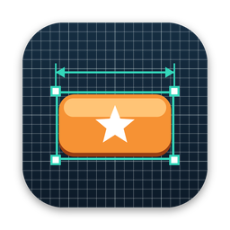

Mockfit Privacy Policy
Effective November 18, 2026 · Mockfit for Mac
1. Your files
Mockup images, sprite images and .mockfit projects you open are read only on your Mac. Finding layer positions, comparing pixels and reading text in a mockup (Apple's on-device text recognition) all run locally. Nothing is uploaded to the developer or to any cloud service. Exported code, images and layout files are written only to the folder you choose.
2. Settings stored on your Mac
Mockfit keeps a few preferences in the app's own storage: appearance, whether you have seen the welcome screens, your usage-report choice, view options and a running count of layers placed (used to show the time you have saved).
3. Subscription
Mockfit Pro is an auto-renewable subscription sold through Apple's In-App Purchase. Payment, billing and renewals are handled by Apple; the developer does not receive your name, email or payment details. The app checks your subscription status with Apple's StoreKit on your Mac.
4. Anonymous usage report (optional, active from version 1.0 build 8)
After the introduction Mockfit asks once whether to share anonymous counts. Nothing is sent until you choose Share Anonymous Counts; if you close the question or choose Don't Share, nothing is sent. Change your choice any time in Mockfit › Settings › Share anonymous usage counts — turning it off stops sending immediately and deletes counts not yet sent.
When it is on, Mockfit sends one report about once a week (and soon after you update the app) to the developer's server check.macappkit.com, signed so forged reports can be dropped. A report contains exactly these fields:
- app — always "mockfit"; version, build — the app version.
- state, flags — whether this copy of the app still carries its original code signature (detects modified copies).
- tier — trial, subscribed or not subscribed.
- mid — a random install ID created by the app (not taken from your Mac's hardware; deleting the app creates a new one).
- os — macOS version number; lang — your preferred language code (for example "en").
- ts, nonce — the time of the report and a random value, so a report is counted once.
- use — how many times each feature was used since the last report, by fixed name only: app.open, app.update, import.images, sample.open, fit.run, fit.copies, text.read, text.add, anchors.suggest, group.make, group.auto, preview.open, export.json, export.swiftui, export.spritekit, export.godot, export.unity, code.copy, paywall.open.
- days — on how many days the app was opened since the last report.
Never sent: images, projects, file or folder names, layer names, text from your mockups, exported code, your Mac's name or serial number, your name, email or Apple Account. The server derives the country from the connection but does not store your IP address. The data is used only to learn which features and versions are used; it is not sold, not shared with anyone and not used for advertising or tracking. Reports are kept as weekly totals for up to about a year.
5. This website
This page and the support page count visits with a small script: one "view" per browser session (the page you arrived on, the referring site or campaign tag, your browser language) and one "click" when you press the Mac App Store button. It sets no cookies, stores no ID and no IP address; the server keeps daily totals only.
6. What is not collected
- No personal information, contacts, location or advertising identifiers.
- No advertising, tracking, third-party analytics or crash-reporting SDKs.
- No account or sign-in.
If you choose to share analytics with app developers in macOS System Settings, Apple may provide anonymous crash reports under Apple's own privacy policy.
7. Children
Mockfit is a general-audience developer tool and does not knowingly collect information from anyone, including children.
8. Your choices
Delete a project by moving its .mockfit file to the Trash. Removing the app removes its stored preferences. Turn the usage report off in Settings at any time. Manage or cancel the subscription in the App Store app › your account › Subscriptions, or at apps.apple.com/account/subscriptions.
9. Changes
If this policy changes, this page and its effective date will be updated before the change takes effect in the app.
10. Contact
Questions: hoanghoang29031993@gmail.com